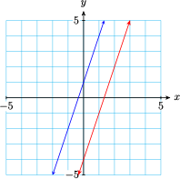
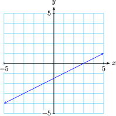

Section 2.3 Algebraic Solution of Systems
Subsection Substitution Method
You are probably familiar with the substitution method for solving a system of equations. Here is a summary of the steps for solving a system by substitution.
To Solve a System by Substitution.
Choose one of the variables in one of the equations. (It is best to choose a variable whose coefficient is \(1\) or \(-1\text{.}\)) Solve the equation for that variable.
Substitute the result of Step 1 into the other equation. This gives an equation in one variable.
Solve the equation obtained in Step 2. This gives the solution value for one of the variables.
Substitute this value into the result of Step 1 to find the solution value of the other variable.
Example 2.21.
Staci stocks two kinds of sleeping bags in her sporting goods store, a standard model and a down-filled model for colder temperatures. From past experience, she estimates that she will sell twice as many of the standard variety as of the down-filled. She has room to stock 84 sleeping bags at a time. How many of each variety should Staci order?
We begin by choosing variables for the unknown quantities.
We write two equations about the variables.
We will solve this system using substitution. Notice that the first equation is already solved for \(x\) in terms of \(y\text{.}\) We substitute \(\alert{2y}\) for \(x\) in the second equation to obtain
Solving for \(y\text{,}\) we find \(y=\alert{28}\text{.}\) Finally, substitute this value into the first equation to find
The solution to the system is \(x = 56\text{,}\) \(y = 28\text{.}\) Staci should order 56 standard sleeping bags and 28 down-filled bags.
Checkpoint 2.22. QuickCheck 1.
Checkpoint 2.23. Practice 1.
Subsection Elimination Method
A second algebraic method for solving systems is called elimination. As with the substitution method, we obtain an equation in a single variable, but we do it by eliminating one of the variables in the system. We must first put both equations into the general linear form \(Ax + By = C\text{.}\)
Example 2.24.
Solve the system
First, we rewrite each equation in the form \(Ax + By = C\text{.}\)
We add the equations together by adding the left side of the first equation to the left side of the second equation, and then adding the two right sides together, as follows:
Note that the \(y\)-terms canceled, or were eliminated. Solving the new equation, \(8x = 40\text{,}\) we find that \(x = 5\text{.}\) We are not finished yet, because we must still find the value of \(y\text{.}\) We can substitute our value for \(x\) into either of the original equations, and solve for \(y\text{.}\) We'll use the second equation, \(3x+2y=19\text{:}\)
Thus, the solution is the point \((5,2)\text{.}\)
Checkpoint 2.25. QuickCheck 2.
In the previous Example, the elimination method worked because the coefficients of \(y\) in the two equations were opposites, \(2\) and \(-2\text{.}\) This caused the \(y\)-terms to cancel out when we added the two equations together. What if the coefficients of neither \(x\) nor \(y\) are opposites? Then we must multiply one or both of the equations in the system by a suitable constant. Consider the system
We can eliminate the \(y\)-terms if we multiply each term of the second equation by \(\alert{-3}\text{,}\) so that the coefficients of \(y\) will be opposites:
Be careful to multiply each term by \(-3\text{,}\) not just the \(y\)-term. We can now replace the second equation by its new version to obtain this system:
Checkpoint 2.26. Practice 2.
Checkpoint 2.27. QuickCheck 3.
When we add a multiple of one equation to the other we are making a linear combinationof the equations. The method of elimination is also called the method of linear combinations. Sometimes we need to multiply both equations by suitable constants in order to eliminate one of the variables.
Example 2.28.
Use linear combinations to solve the system
This time we choose to eliminate the \(x\)-terms. We must arrange things so that the coefficients of the \(x\)-terms are opposites, so we look for the smallest integer that both 2 and 5 divide into evenly. (This number is called the lowest common multiple, or LCM, of 2 and 5.) The LCM of 2 and 5 is 10. We want one of the coefficients of \(x\) to be \(10\text{,}\) and the other to be \(-10\text{.}\)
To achieve this, we multiply the first equation by \(2\) and the second equation by \(-5\text{.}\)
Adding these new equations eliminates the \(x\)-term and yields an equation in \(y\text{.}\)
We solve for \(y\) to find \(y = -1\text{.}\) Finally, we substitute \(y = \alert{-1}\) into the first equation and solve for \(x\text{.}\)
The solution of the system is the point \((4, -1)\text{.}\)
Checkpoint 2.29. QuickCheck 4.
Checkpoint 2.30. Practice 3.
Which method should you choose to solve a particular system? Both methods work on any linear system, but the substitution method is easier if one of the variables in one of the equations has coefficient \(1\) or \(-1\text{.}\)
Subsection Inconsistent and Dependent Systems
Recall that a system of two linear equations does not always have a unique solution; it may be inconsistent or dependent. The elimination method will reveal whether the system falls into one of these two cases.
Example 2.31.
Solve each system by elimination.
- \begin{align*} 3x-y \amp =4\\ -6x+2y\amp = 2 \end{align*}
- \begin{align*} x-2y\amp =3\\ 2x-4y\amp = 6 \end{align*}
-

To eliminate the \(y\)-terms, we multiply the first equation by 2 and add:
\begin{align*} 6x-2y\amp =\hphantom{1}8\\ \underline{-6x+2y}\amp = \underline{\hphantom{1}2\vphantom{y}} \\ 0x+0y\amp =10 \end{align*}Both variables are eliminated, and we are left with the false statement \(0 = 10\text{.}\) There are no values of \(x\) or \(y\) that will make this equation true, so the system has no solutions. The graph shows that the system is inconsistent.
-

To eliminate the \(x\)-terms, we multiply the first equation by \(-2\) and add:
\begin{align*} -2x+4y\amp =-6\\ \underline{\hphantom{-}2x-4y}\amp = \underline{\hphantom{-}6\vphantom{y}} \\ 0x+0y\amp =\hphantom{-}0 \end{align*}We are left with the true but unhelpful equation \(0 = 0\text{.}\) The two equations are in fact equivalent (one is a constant multiple of the other), so the system is dependent. The graph of both equations is shown in the figure.
Inconsistent and Dependent Systems.
When using elimination to solve a system:
-
If combining the two equations results in an equation of the form
\begin{align*} 0x+0y = k \amp\amp(k\ne 0) \end{align*}then the system is inconsistent.
-
If combining the two equations results in an equation of the form
\begin{gather*} 0x+0y =0 \end{gather*}then the system is dependent.
Checkpoint 2.32. Practice 4.
Exercises Problem Set 2.3
Warm Up
1.
Solve the system by substitution:
-
Step 1
Choose one of the equations, and solve for one of the variables.
-
Step 2
Substitute this new expression for \(x\) or \(y\) into the other equation.
-
Step 3
Notice that the new equation has only one variable. Solve the equation.
-
Step 4
Substitute the answer to Step 3 into the result of Step 1 to find the other variable. Write your solution as an ordered pair.
2.
Solve the system by elimination:
-
Step 1
We choose to eliminate \(x\text{.}\) Multiply the first equation by \(2\) and the second equation by \(-3\text{.}\) (Why?)
\begin{align*} \alert{2}[3x+5y=1] \amp\rightarrow \hphantom{other side of equation} \\ \alert{-3}[2x-3y=7] \amp\rightarrow \hphantom{other side of equation} \end{align*} -
Step 2
The coefficients of \(x\) are now opposites. Add the two equations together.
-
Step 3
Solve the new equation for the remaining variable.
-
Step 4
Use substitution to find the other variable. Write your solution as an ordered pair.
Skills Practice
For Problems 3-6, solve the system by substitution or by linear combinations.
3.
4.
5.
6.
For Problems 7 and 8, clear the fractions in each equation first, then solve the system by substitution or by linear combinations.
7.
8.
For Problems 9 and 10, use linear combinations to identify each system as dependent, inconsistent, or consistent and independent.
9.
10.
Applications
11.
Benham will service \(2.5x\) copy machines per week if he can charge \(x\) dollars per machine, and the public will pay for \(350-4.5x\) jobs at \(x\) dollars per machine.
- Write the supply and demand equations for servicing copy machines.
- Find the equilibrium price and the number of copy machines Benham will service at that price.
12.
Delbert answered 13 true-false and 9 fill-in questions correctly on his last test and got a score of 71. If he had answered 9 true-false and 13 fill-ins correctly, he would have made an 83. How many points was each type of problem worth?
13.
Paul needs 40 pounds of 48% silver alloy to finish a collection of jewelry. How many pounds of 45% silver alloy should he melt with 60% silver alloy to obtain the alloy he needs?
-
Choose variables for the unknown quantities, and fill in the table.
Pounds % silver Amount of silver First alloy Second alloy Mixture Write one equation about the amount of alloy Paul needs.
Write a second equation about the amount of silver in the alloys.
Solve the system and answer the question in the problem.
14.
Amal plans to make 10 liters of a 17% acid solution by mixing a 20% acid solution with a 15% acid solution. How much of each should she use?
-
Choose variables for the unknown quantities, and fill in the table.
Liters % acid Amount of acid First solution Second solution Mixture Write one equation about the amount of solution Amal needs.
Write a second equation about the acid in the solution.
Solve the system and answer the question in the problem.
15.
Rani kayaks downstream for 45 minutes and travels a distance of 6000 meters. On the return journey upstream, she covers only 4800 meters in 45 minutes. How fast is the current in the river, and how fast would Rani kayak in still water? (Give your answers in meters per minute.)
-
Choose variables for the unknown quantities, and fill in the table.
Rate Time Distance Downstream \(\) \(\) \(\) Upstream \(\) \(\) \(\) Write one equation about the downstream trip.
Write a second equation about the return trip.
Solve the system and answer the question in the problem.
16.
Because of prevailing winds, a flight from Detroit to Denver, a distance of 1120 miles, took 4 hours on Econoflite, and the return trip took 3.5 hours. What were the speed of the airplane and the speed of the wind?
-
Choose variables for the unknown quantities, and fill in the table.
Rate Time Distance Detroit to Denver Denver to Detroit Write one equation about the trip from Detroit to Ddenver.
Write a second equation about the return trip.
Solve the system and answer the question in the problem.
17.
Geologists can calculate the distance from their seismograph to the epicenter of an earthquake by timing the arrival of the P and S waves. They know that, for this earthquake, P waves travel at about 5.4 miles per second and S waves travel at 3.0 miles per second. If the P waves arrived 3 minutes before the S waves, how far away is the epicenter of the quake?
18.
A cup of rolled oats provides 310 calories. A cup of rolled wheat flakes provides 290 calories. A new breakfast cereal combines wheat and oats to provide 302 calories per cup. How much of each grain does 1 cup of the cereal include?
-
Choose variables for the unknown quantities, and fill in the table.
Cups Calories per cup Calories Oat flakes Wheat flakes Mixture Write one equation about the amounts of each grain.
Write a second equation about the number of calories.
Solve the system and answer the question in the problem.
19.
Acme Motor Company is opening a new plant to produce chassis for two of its models, a sports coupe and a wagon. Each sports coupe requires a riveter for 3 hours and a welder for 4 hours; each wagon requires a riveter for 4 hours and a welder for 5 hours. The plant has available 120 hours of riveting and 155 hours of welding per day. How many of each model of chassis can it produce in a day?
-
Choose variables for the unknown quantities, and fill in the table.
Sports coupes Wagons Total Hours of riveting Hours of welding Write one equation about the hours of riveting.
Write a second equation about the hours of weldings.
Solve the system and answer the question in the problem.
20.
Carmella has $1200 invested in two stocks; one returns 8% per year and the other returns 12% per year. The income from the 8% stock is $3 more than the income from the 12% stock. How much did she invest in each stock?
-
Choose variables for the unknown quantities, and fill in the table.
Principal Interest Rate Interest First stock Second stock Total Write one equation about the amounts Carmella invested.
Write a second equation about Carmella's annual interest.
Solve the system and answer the question in the problem.